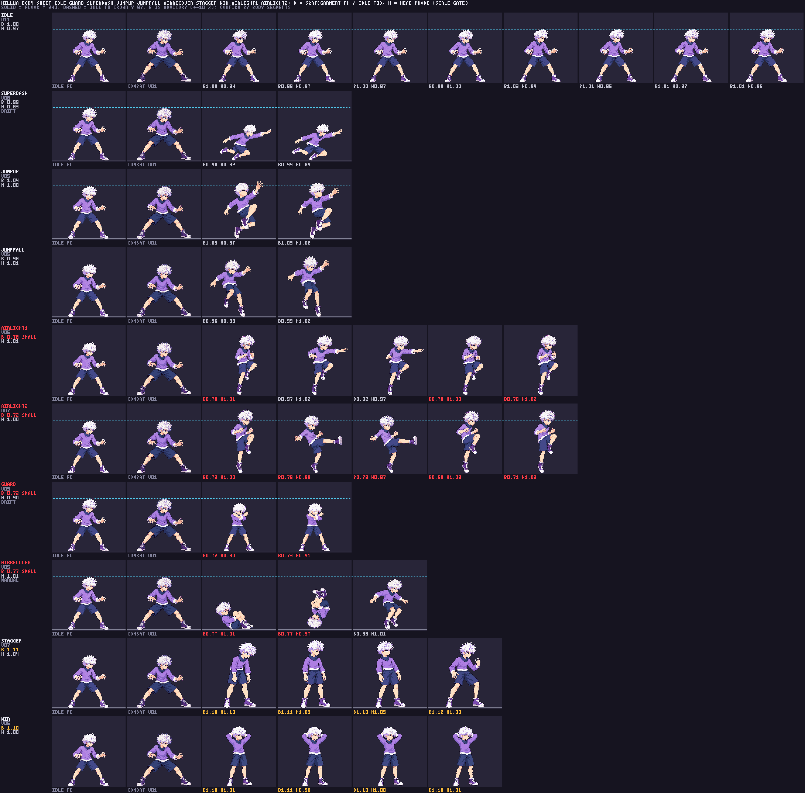

Killua round 4: selected candidates
All five candidates are HOLD / needs review. No new art is approved. The current game atlas is unchanged. Playback comes from the exact quantized diagnostic atlas; this is not a passing production pack or in-game integration.
Selected: idle v11 · guard v09 · superDash v08 · stagger v07 · win v05. Earlier attempts are closed history below.
Strict packing refuses guard09, superDash08 and existing charge13. A head probe never clears torso, limbs or shoes. No full anatomy pass.
Each comparison uses native 256×256 cells, one image pixel per display pixel: approved combat, shipped approved idle08 frame0, selected candidate. On small screens, scroll sideways. Pause or step to compare poses; slow playback to inspect joins.
Loading the exact diagnostic atlas…
Selected idle v11 — HOLD
Occupied height144px in frames0–3 /146px in frames4–7 misses156–162px. Head36–38±2, torso38±2, arm35±4, leg56–58±6 and shoe23±2px remain uncertain. Uniform enlargement could oversize the torso. The A/B join introduces a2px top-bound step; user motion review remains pending. Idle A/B budgets exhausted.
Selected unapproved source: idle_v11.png

Selected guard v09 — HOLD
Both frames occupy132px, below150–158px. Head34±2px versus combat about40–41; probe0.904 fails. Crossed arms conceal collar and arm chains. Raw landmarks suggest a calibration hypothesis, not a source-body pass. One generation call remains.
Selected unapproved source: guard_v09.png

Selected superDash v08 — HOLD
Probe0.832 fails. Head34±2, torso29–30±2, arm39±4, folded leg44–45±6 and shoe23±2px are projection-limited. Calibration alone and correct anatomy are unproven. Both packed frames retain the source limbs. One generation call remains.
Selected unapproved source: superDash_v08.png

Selected stagger v07 — HOLD; loop reset
Astra motion finding: frames0–2 dangle the arms; frame3 restores fighting guard. The looping frame3 → frame0 abruptly drops arms and slumps again. This source pose-sequence issue is separate from atlas calibration. Three-call budget exhausted; no new generation requested.
Head/hair and shoes exceed candidate idle. Shoe29–30±2 versus candidate idle23±2 gives conservative ratio≥1.08: an evidenced mismatch within the candidate set. Full comparison against approved combat anatomy remains unresolved.
Selected unapproved source: stagger_v07.png

Selected win v05 — HOLD
Torso37±2, leg58±6 and shoe24±2px overlap baseline too broadly to certify. Hands behind the head hide wrist/elbow chains. Astra found no gross frame3 → frame0 size discontinuity; this does not clear anatomy. Two generation calls remain.
Selected unapproved source: win_v05.png

Shipped suspects — retained, inconclusive
The five retained movement/aerial strips have concealed or projected joints; no numerical pass. Old stagger/win were redrawn after measured torso concerns. These are shipped baseline strips, not the selected candidates.
Show all seven shipped strips
jumpUp v05

jumpFall v05

airRecover v05

stagger v05

win v04

airLight1 v06

airLight2 v07

Earlier attempts — history only
Immutable unapproved history. These are not selected and are never used by the players above.
Historical idle v09

Historical idle v10

Historical guard v08

Historical superDash v07

Historical stagger v06

Body-sheet evidence
Garment-colour area B is advisory, not a chain pass. Shipped42-strip area flags17; diagnostic10-strip flags4. Manual segments and Astra findings remain separate.
Diagnostic body sheet · Diagnostic area numbers · Shipped body sheet · Shipped area numbers · Head-only sheet


Show diagnostic body sheet

Show exact full diagnostic atlas